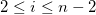

2D 折れ線
2D 線+シンボル
_Line_Tab/400px-The_Plot_Details_Line_Tab_4.png)
接続線付き2D縦棒/横棒
極座標グラフ
レーダーチャート
ネットワークプロット
リボングラフ
3D散布図/トラジェクトリ/ベクトル
階層エッジバンドリング
多くのグラフタイプでグラフ線の編集が可能です。 しかし、グラフの線タブで利用可能な編集オプションは、データプロットの種類によって異なります。 ここでは、このタブから利用できるすべての編集オプションについて説明します。 グラフタイプによっては利用できない編集オプションもあるので注意してください。
2D 折れ線
|
2D 線+シンボル
|
|
|
|
接続線付き2D縦棒/横棒
|
極座標グラフ
|
レーダーチャート
|
ネットワークプロット
|
リボングラフ
|
3D散布図/トラジェクトリ/ベクトル
|
階層エッジバンドリング
|
このドロップダウンリストで線のスタイルを選択します。
| 線なし |
データポイントは接続されません。 |
|---|---|
| 直線 |
データポイント間に直線を引きます。 |
| 2点線分 |
直線と線なしで、交互にデータポイントを接続します。 |
| 3点線分 |
3つのデータポイントを直線で接続、次のポイントまで線なし、3つのデータポイントの直線と繰り返します。 |
| B-スプライン |
座標、である一対のデータセットに対して、OriginはBスプライン接続を使用して滑らかな曲線を作成します。 B-スプライン曲線はパラメトリック方程式によって定義できます。 座標周辺に対しては、以下の式で計算されます。
ここでです。 tの範囲を0から1として、各ポイント周辺の座標が計算されます。 この3次B-スプライン曲線は、二次導関数まで連続しています。 基になるデータポイント を通過するスプライン曲線とは異なり、B-スプライン曲線は、基になるデータポイントを通過することなく、その周辺をたどります。 (Originでは、最初と最後のデータポイントを複製することで曲線がこれら2点を通過するようにします。) |
| スプライン |
このオプションでは3次スプライン接続を作成します。 この接続線の場合、X値は増加する離散値でなくてはなりません。 また、データポイントの数は、900を超える場合は操作できません。 曲率の情報はメモリに保存されているので、このスプラインの解析度はページの倍率にかかわらず同じです。 ORIGIN.INIファイルのSplineStep変数で、スプライン計算の増分を制御しています。 0.1ポイント単で表されます。 |
| 水平階段 |
このオプションでは階段状の直角接続をします。 最初の線は水平です。 |
| 垂直階段 |
このオプションでは階段状の直角接続をします。 最初の線は垂直です。 |
| 水平中央階段 |
このオプションでは階段状の直角接続をします。 各点は水平線の中央位置となります。 |
| 垂直中央階段 |
このオプションでは階段状の直角接続をします。 各点は垂直線の中央位置となります。 |
| ベジエ |
このオプションでベジエ曲線を作成します。 ベジエ曲線は、B-スプライン曲線とほぼ同じです。 4つのデータポイントに関するパラメトリック方程式で定義されます。
Originは、 |
| 変更されたベジェ |
変更されたベジエ曲線を使う接続法はベジエ方法と同じアルゴリズムを使用します。しかし、4つの連続するデータポイントを使用せず、2つのデータポイントと2つの補間ポイントを基準として計算します。 |
| Akimaスプライン |
この接続法はAkimaスプラインの補間アルゴリズムを使用してAkima スプラインを作成します。akima補間は外れ値によって線が振れることがありません。 |
|
Note:
|
3D散布図/トラジェクトリ/ベクトルグラフで、直線を使ってシンボルを接続するかを指定します。
このドロップダウンリストで線のスタイルを選択します。
この機能がサポートされるグラフタイプでは、線種リストの右側にある参照ボタンをクリックすると、カスタム破線ダイアログボックスが開きます。ここで破線を定義したり、既存の設定を変更して新しい名前で保存することができます。
定義した設定はプロジェクトに保存されるので、簡単にファイル共有が可能です。なお、共同作業者が他のプロジェクトでも同じ破線を使用したい場合は、システムにカスタム設定を保存する必要があります。
|
Note: 解像度が低いスクリーンや小さいウィンドウでは破線は実線のように見えることがあります。しかし、印刷時には指定された破線になります。 |
このコンビネーションボックスで線の太さを入力または選択します。 線の太さはポイント単位とし、1ポイント＝ 1/72インチです。
線タブのあるすべての2Dグラフでは線幅ドロップダウンリストで、列を選択して線幅をその列にマップできます。ドロップダウンリストには現在のワークシートにある列のみ表示されるのでご注意ください。
列を選択すると、縮尺倍率を指定して、幅の列に値を掛けて線幅を定義することもできます。シンボルサイズの縮尺倍率を参照することができます。
このドロップダウンリストで線の色を選択します。
線＋シンボルのグラフでは、シンボル色はデフォルトで自動に設定されており、線の色と同じになります。シンボルの色はシンボルタブで設定できます。
リボングラフの場合、デフォルトでリボンの色は自動に設定され、接続された棒の色に従います。
色を推移、インデックスに設定すると、各線分の色は推移リストエディタを使って設定できます。 |
接続線の色を指定します。この設定はコードダイアグラムのリンクカラーと同じです。
放射積み上げグラフのようないくつかの極座標グラフでは、円を作るために始点と終点を接続する必要があるかもしれません。このチェックボックスにチェックを入れ、折れ線グラフの最初と最後の点を接続します。
このセクションは線＋シンボルのグラフにのみ使用できます。
線とシンボルで構成されるデータプロットの場合、シンボルとの間隔チェックボックスを選択すると、シンボルと線の間に間隔が表示されます。 隙間の間隔を調節するには、オプションダイアログボックス(ツール：オプション)のグラフタブで、線とシンボルの間隔(%)コンビネーションボックスを編集します。
シンボルとの隙間にチェックを付けない場合、線を前面に置くと線を後方に置くラジオボタンが有効になります。これにより、シンボルと線の位置関係を調節できます。
線がシンボルの上を通過するように表示するには、線を前面に置くボタンを選択します。 線がシンボルの下を通過するように表示するには、線を後方に置くボタンを選択します。
|
Note: シンボルの内部が枠のみに設定されている場合、線を前面に置くと線を後方に置くラジオボタンの効果に違いはなく、線は常にシンボルを通過するように表示されます。 線を非表示にするには、シンボルタブ(作図の詳細)で、カスタムコンストラクションを選択し、内部ドロップダウンリストから空白を選択します。 そして、塗りつぶしの色をレイヤの背景色と同じ色にセットします。 |
このチェックボックスは、接続線付きの2D棒グラフ/縦棒グラフとと2D線/線+シンボルグラフで使用できます。
2D縦棒/横棒グラフの表示タブで接続線を有効にすると、このチェックボックスはデフォルトでチェックされ、サブセット内の同じデータ列の中間点のみを接続します。
折れ線、線+シンボルグラフではデフォルトでチェックがついています。単純な単一プロットの場合、特に変化はありませんが、カテゴリ列のデータを使用してプロットを複数のセグメント（サブセット）に分割する場合は、このチェックボックスにチェックを付けると、サブセット間を接続する不要な線を削除できます。
作図の詳細のサブセットタブのコントロールを使用して、プロットを個別のセグメント（サブセット）に分割します。
折れ線グラフ上に矢印を表示するかどうかを指定します。この設定は2D折れ線グラフにのみ有効です。
このチェックボックスをオンにすると、 矢印タブ が表示され、折れ線上に矢印を配置する方法を決定できます。
これは、線をどれぐらいを透過させるか指定します。コンビネーションボックスに直接整数(1から100)を入力するか、目盛りをスライドして値を決めます。0は全てのシンボルは透過しておらず、100は完全に透過している事を示しています。
ノード間の各接続線の透過率を指定します。
線の透過率の最大値と最小値を指定します。この範囲の下では、すべての線に透過率の値が設定されます。
各接続線の透過率をマップする列を指定します。絶対値を使用するにチェックされていない場合、この列の値は正規化され、指定された透過範囲に各線の透過率をマッピングするために使用されます。
このチェックボックスをオンにすると、選択した列の値が実際の透明度値になります。
リーフ間の接続線の透過率を指定します。
全ての線の透過率の範囲を指定します。
チェックを付けた場合、透過率グループに最小（デフォルトは90）および最大（デフォルトは0）の2つのスライダーが追加表示されます。Plot_networkシートで列にマップしている場合、データの最小値および最大値が最小から 最大に線形にマッピングされます。
この設定は、主に相関ネットワークプロット用に実装されています。相関行列は負の係数を生成することがあるので、この項目にチェックを付けると、絶対値 (例：abs(Weight)) で透明度を制御します。
メニューアイテムである作図：面積図：面積グラフ、または作図：面積図：色付き面積グラフと操作すると直接面積図を作成できます。有効にするにチェックがついている場合、ドロップダウンリストがアクティブになり、以下の表にまとめているオプションが選択できます。塗りつぶしチェックボックスの右側のプレビュー イメージで、塗りつぶす領域を示します。
さらに、曲線以下の塗りつぶしチェックボックスにチェックがついていると、塗りつぶし領域をカスタマイズするために、作図の詳細にパターン タブが追加されます。上下の色で塗りつぶすを選択すると、2 パターンタブが追加され、パターン_上とパターン_下という名前が付けられ、「上」と「下」の塗りつぶしを個別にカスタマイズできます。
| ベースまで塗りつぶす |
折れ線や線+シンボルのプロットで、データプロットと指定した基線で挟まれた領域を塗りつぶします。 極座標データプロットの場合、データプロットの線と0と180度を結ぶ下X軸の主グリッド線で囲まれた部分が塗りつぶされます。
| |
|---|---|---|
| 端線のみ |
折れ線や線+シンボルのプロットで、データプロットの線と指定した基線で挟まれた領域の端の線のみ描画します。
| |
| データプロットまで塗りつぶす |
2つ以上の折れ線（または、線+シンボル）グラフがグラフレイヤ内にある場合、このオプションは選択したデータプロットと指定したデータプロット間を1色または2色で塗りつぶします。データの順番はレイヤ内容ダイアログで定義できます。 データプロット：
上下の色で塗りつぶす：
塗り方オプションリスト：
これらのグラフの線タブコントロールの代わりに、Ctrlキーを使用してグラフレイヤ内の任意の2つのプロットを選択し、ミニツールバーボタンを使用して選択した曲線の間に塗りつぶしを適用することもできます。 | |
| 方向により形状を塗りつぶし |
このオプションは、欠損値のペアを使用してポリゴンを分離するshapefileデータの処理を目的としています。これらの欠損値のペアは、ポリゴンの塗りつぶしを適切に処理するオプションである両端を結んだ内部領域(内包的)および両端を結んだ外部領域(排他的)のように処理するのを防ぎます。Shapefileデータ使用する場合は、このオプションを使用してポリゴン内内 に色を付けます。 このオプションは、デフォルトで間隔タブのサブセットを有効にするがなしに設定された場合に追加されます。shapefileポリゴンに塗りつぶしを適用するには、間隔タブの列によるラジオボタンを選択し、列を選択してサブセットを定義します。パターンタブで、塗りつぶしの下の色をクリックし、ポイント毎タブで色リストを選択し、色オプションで色を適用する方法を選択します。 | |
| 逆方向により形状を塗りつぶし |
方向により形状を塗りつぶしオプションと同じ方法でポリゴンを描画しますが、塗りが逆（ポリゴンの外側）になります。 このオプションは、デフォルトで間隔タブのサブセットを有効にするがなしに設定された場合に追加されます。間隔タブでの設定については一つ前の項目を確認してください。 | |
| 両端を結んだ内部領域（内包域） |
データプロットと、最初と最後のデータポイントを結ぶ規準線とで挟まれた領域を塗りつぶします。データプロットが欠損値を含む場合、データプロットの最初のセグメント(最初の欠損値まで)を塗りつぶし、次の欠損値までの2番目のセグメントを塗りつぶします。 このオプションは、データプロットで決定される領域を塗りつぶす場合に役立ちます。 | |
| 両端を結んだ外部領域（排他域） |
データプロットの外側の領域と、最初と最後のデータポイントによって定義されたベースラインを塗りつぶします。データプロットが欠損値を含む場合、データプロットの最初のセグメントの外側の領域(最初の欠損値まで)を塗りつぶし、次の欠損値までの2番目のセグメントの外側の領域を塗りつぶします。 このオプションは、データプロットで決まる閉じた領域の外側を塗りつぶす場合に役立ちます。 | |
| レイヤを垂直に超える欠損破断領域 |
このオプションは、第二のデータセットと組み合わせることで、2DグラフＤグラフにリセッションバーを追加できます。第二のデータセットは、欠損値を使って景気後退期を区別します。 詳細は、FAQ-840 2Dグラフにリセッションバーを追加する方法は？を参照してください。 | |
| 垂直方向のペアワイズ | このオプションは、第二のデータセットと組み合わせることで、2DグラフＤグラフにリセッションバーを追加できます。2番目のデータセットは、X値が各景気後退期の開始点と終了点が交互になるように構成します。
詳細は、FAQ-840 2Dグラフにリセッションバーを追加する方法は？を参照してください。 |
Note： グループ化されたプロットを操作するためのヒント。
|
曲線以下の塗りつぶしが標準、端線のみ、端線と基線、ベースまで塗りつぶすの場合、基線ドロップダウンリストがグラフの線タブに追加されます。
上記の塗りつぶしオプションに加えて、軸ダイアログのスケールタブの逆順チェックボックスをオンまたはオフにすることで、塗りつぶしを垂直または水平に反転できます。 |
積み上げ棒グラフを接続するためにリボンを表示してリボングラフにするか指定します。
リボングラフでリボンチェックボックスにチェックを付けると、リンク線の曲率を指定できます。0は曲率なしを意味し、100は最大曲率を意味します。
ネットワークプロットの場合、2つのノード間のリンクの重なりを回避するために曲率を指定できます。
3D散布図/トラジェクトリ/ベクトルグラフでる用可能な設定グループです。シンボル間の接続線に矢印を追加表示する際に使用します。3Dベクトルグラフの場合、ベクトルの始点を結びます。
矢先の長さを指定します。矢の根元の長さで、単位はポイントです。

矢先の角度を決定します。
矢印の色を指定します。
隣り合う2つの矢印間の距離を決定します。ここに入力する値は矢印の長さの乗数で、デフォルト値は5です。
接続線に矢印を配置するときに許容される曲率の最大値を決定します。等高線ラベルタブの曲線の許容値オプションと同じ設定です。
曲線の許容値 = 曲線に沿った矢印の長さ/直線距離
終了の矢印を表示はデフォルトでチェックがついており、最後のポイントで矢印を表示するか決定します。 最後のポイントと最後の矢印間の距離が、矢印間の距離の半分より小さい場合、元の位置でなく最後のポイントで最後の矢印を表示します。それ以外の場合、追加の矢印が最後のポイントに追加されます。
開始の矢印を表示で、最初のポイントに矢印を表示するか決定します。デフォルトではチェックは外れており、最初のポイント+距離の位置に最初の矢印が追加されます。
この制御グループは方向のあるネットワークプロットでのみ利用できます。ネットワークの作成時にリンクの方向を追加しなかった場合、この制御は使用できません。
この制御グループを使用して、ノード間のリンクの矢印のフォーマットをカスタマイズできます。それらは矢印の形の変更、矢印の幅の調整、および矢印の長さの設定です。
階層構造内に3制御点が複数ある場合に、LCA（最小共通祖先）を保持するかどうかを指定します。
例えば、次のグラフでは、A~E間はポリラインは赤線で、制御点はA-G1-G3-G4-E、 AEのLCAはG4です。
_Line_Tab/Line_Tab_HEB-LCA.png)
階層エッジバンドリングは、各接続線内の制御点を区分的に3次のBスプラインで接続します。このコントロールを使用してベータ (区分3次Bスプライン式) を指定し、線の曲率と形状を制御できます。
![X[t]=\left( -t^3+3t^2-3t+1\right) X\left[ 1\right] +(3t^3-6t^2+3t)X\left[ 2\right] +\left( -3t^3+3t^2\right)X\left[ 3\right] +t^3X\left[ 4\right]](../images/The_(Plot_Details)_Line_Tab/math-a554d67ce2aaa09631dcbcc3a4e16a6c.png "X[t]=\left( -t^3+3t^2-3t+1\right) X\left[ 1\right] +(3t^3-6t^2+3t)X\left[ 2\right] +\left( -3t^3+3t^2\right)X\left[ 3\right] +t^3X\left[ 4\right]")
![Y[t]=\left( -t^3+3t^2-3t+1\right) Y\left[ 1\right] +(3t^3-6t^2+3t)Y\left[ 2\right] +\left( -3t^3+3t^2\right)Y\left[ 3\right] +t^3Y\left[ 4\right]](../images/The_(Plot_Details)_Line_Tab/math-d7e7d4437e8cb1079b95ba8cebde31b5.png "Y[t]=\left( -t^3+3t^2-3t+1\right) Y\left[ 1\right] +(3t^3-6t^2+3t)Y\left[ 2\right] +\left( -3t^3+3t^2\right)Y\left[ 3\right] +t^3Y\left[ 4\right]")
![\left( X[i],Y[i]\right),i=1,2,3,4,](../images/The_(Plot_Details)_Line_Tab/math-e3dba6e5e685f4fefabebe318604672e.png "\left( X[i],Y[i]\right),i=1,2,3,4,") の4つの連続したデータポイントを使用し、tの範囲を0から1として、ベジエ曲線の一部を作成します。 曲線は、常に1番目と4番目のポイントを通過しますが、2番目と3番目のポイントは通過しません。 曲線の次の区間は、で作成され、この処理はすべてのデータポイントに対して行われます(データポイントの総数が4の倍数でない場合、残りの1-3ポイントはこの接続に使用されません)。 全ての範囲に対しては、曲線の導関数は連続ではありませんが、(tが0から1までの)各部分では、曲線は2次導関数まで連続的です。
の4つの連続したデータポイントを使用し、tの範囲を0から1として、ベジエ曲線の一部を作成します。 曲線は、常に1番目と4番目のポイントを通過しますが、2番目と3番目のポイントは通過しません。 曲線の次の区間は、で作成され、この処理はすべてのデータポイントに対して行われます(データポイントの総数が4の倍数でない場合、残りの1-3ポイントはこの接続に使用されません)。 全ての範囲に対しては、曲線の導関数は連続ではありませんが、(tが0から1までの)各部分では、曲線は2次導関数まで連続的です。
_Line_Tab/Line_interface2.png)
_Line_Tab/OH_fill_area_reverse_axis_scale.png)